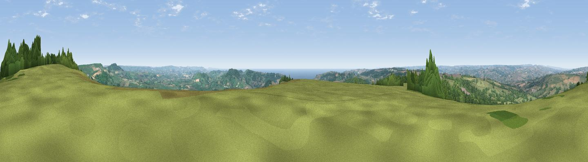

Lambert's Castle Hill
#1316 in England · top 5% of its area beats it · near MarshwoodWhere it is
The exact computed spot (SY 37053 98835). Click the marker for map links.
The view, rendered

A 360° render of this exact spot computed from the terrain model, tree cover and land cover — summer colours, afternoon light, calibrated against photographs of famous viewpoints. Real trees, hedges and buildings will differ in detail.
The panorama
Grey silhouette: terrain skyline in each direction (720 bearings, Earth curvature and refraction included). Dashed green: skyline with trees (+15 m) and buildings (+8 m) as obstacles. Blue strip: how far the ground is visible on each bearing.
Where the view opens
Wedge length = distance to the farthest visible ground on that bearing (vegetation-aware). Rings at 10, 25 and 50 km.
What fills the view
61% grassland · 28% woodland · 7% cropland · 3% water ·
Angular shares of the visible panorama (visual magnitude), not map area. Landscape diversity 0.43 (0–1 Shannon).
Key numbers
More beautiful places nearby
The staircase of upgrades: each row has a higher view potential than everything closer. Driving times are estimates from straight-line distance, calibrated against real road routing — check an actual route before setting out.
| Place | Direction | Drive | Score |
|---|---|---|---|
| Viewpoint near Burstock | ENE · 5 km | ~11 min | 81.8 |
| Lewesdon Hill | ENE · 7 km | ~15 min | 83.3 |
| Golden Cap | SSE · 8 km | ~15 min | 88.7 |
| The Knoll | ESE · 20 km | ~34 min | 91.0 |
50.78565, -2.89431 · source: dobih hill · position refined by local search. Computed location — check access rights before visiting.